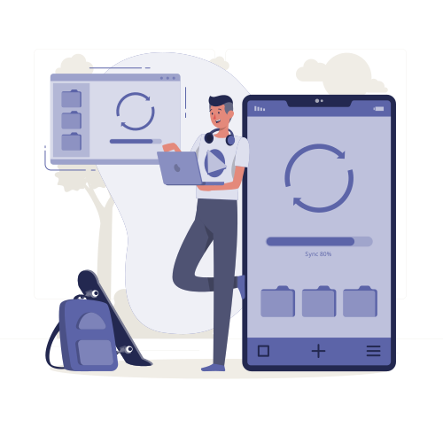

Dokumente schneller finden, verstehen und sicher bearbeiten.
Unsere Dokumentenlösungen kombinieren strukturiertes DMS mit KI: Erfassung, OCR, Klassifikation, Datenextraktion, semantische Suche, Freigaben, Nachvollziehbarkeit und Archivierung greifen ineinander.
Was wir tun
Organisationen haben selten ein Dokumentenproblem. Sie haben ein Auffindbarkeits-, Kontroll- und Nachvollziehbarkeitsproblem, das sich als Dokumentenproblem zeigt, und KI ist das, was es endlich löst.
Unsere DMS-Lösungen zentralisieren, strukturieren und sichern Unternehmensdokumente in einer in Microsoft 365 integrierten Plattform, mit KI-gestützter Klassifikation, Extraktion und semantischer Suche auf einer soliden Zugriffsverwaltung und vollständiger Nachvollziehbarkeit.
Wir haben dies in nationalem Maßstab ausgerollt, Digitalisierung von Teilnehmerverträgen über ein gesamtes Filialnetz, auf Vorstandsebene für die Unterlagen einer multilateralen Institution und als souveräne On-Premises-KI-Plattform für das juristische Vertragsmanagement.
Die Intelligenzschicht kann auf Cloud-KI-Diensten wie Azure OpenAI laufen oder auf Open-Weight-Modellen wie DeepSeek auf Ihrer eigenen Infrastruktur, das Plattformdesign ändert sich nicht, nur der Ort der Inferenz.
Eingesetzte Technologien
KI als fester Teil der Plattform
Unsere Dokumentenmanagement-Lösungen sind vollständig KI-integriert. Klassifikation, Extraktion, Suche und Prüfung sind von Beginn an KI-gesteuert, und Sie entscheiden, wo die Intelligenz läuft.
KI-Erfassung & Klassifikation
OCR für gescannte und fotografierte Dokumente, automatische Klassifikation nach Dokumenttyp und Extraktion der relevanten Felder, Parteien, Daten, Beträge, Pflichten, Referenznummern.
Suche in natürlicher Sprache
Stellen Sie dem Repository eine Frage, statt Suchbegriffe zu raten. Semantisches Retrieval findet die relevanten Verträge, Klauseln oder Datensätze und zitiert Quelldokument und Textstelle.
KI-gestützte Prüfung
Erkennung von Risikoklauseln, Hinweise auf Inkonsistenzen, Vergleich von Dokumentversionen, Extraktion von Pflichten und Fristen sowie Zusammenfassungen des Geänderten, mit beibehaltener menschlicher Freigabe.
Cloud-KI oder souveräne On-Premises-Modelle
Dieselbe Dokumentenplattform, zwei Intelligenz-Optionen. Die Entscheidung richtet sich nach Ihrer regulatorischen Lage und danach, ob Sie lokale Infrastruktur haben, oder planen.
Cloud-KI
Azure OpenAI Service und Microsoft-KI-Dienste, angewandt auf Inhalte, die in Ihrem Microsoft-365-Tenant kontrolliert werden. Schnellster Weg in die Produktion, keine GPU-Infrastruktur zu beschaffen oder zu betreiben, und volle Integration mit Purview-Aufbewahrung, Vertraulichkeitsbezeichnungen und DLP.
Am besten, wenn Ihre Datenklassifizierung Cloud-Verarbeitung erlaubt und Sie die Fähigkeit schnell brauchen.
Souveräne On-Premises-KI
Open-Weight-Modelle, DeepSeek, Llama, Mistral, auf Ihrer eigenen GPU-Infrastruktur betrieben, mit Vektordatenbank, RAG-Orchestrierung und APIs in Ihrem Netz. Weder die Dokumente noch die Inferenz verlassen Ihre Grenze, und die Modelle bleiben unter Ihrer Kontrolle.
Am besten, wenn Sie juristisch sensible, regulatorische oder eingestufte Inhalte halten oder bereits eine lokale KI-Farm betreiben.
Wir haben eine On-Premises-KI-Schicht über einem bestehenden Enterprise-Dokumentenrepository für die Rechtsabteilung eines nationalen Telekommunikationsanbieters entworfen, lokaler LLM-Betrieb, RAG-Orchestrierung, Vektorindizierung und Ingest-Konnektoren, die aus dem bestehenden DMS lesen, genau damit Verträge und regulatorische Inhalte in der Infrastruktur des Kunden bleiben.
Unser Vorgehen

- 01Erfassen
Scannen, E-Mail-Ingest, Massenimport aus Dateifreigaben
- 02Verstehen
OCR, KI-Klassifikation, Metadatenextraktion
- 03Kontrollieren
Freigabe-Workflows, Versionierung, Zugriffskontrolle
- 04Finden
Semantische Suche in natürlicher Sprache
Typische Einsatzbereiche
Vertragsdigitalisierung im großen Maßstab
Teilnehmer- und Geschäftsverträge werden über ein verteiltes Filialnetz digital erfasst, geprüft und archiviert, als Ersatz der Papierbearbeitung am Verkaufspunkt.
KI-gestützte Vertragsprüfung
Automatische Erkennung von Risikoklauseln, Inkonsistenzen und Abweichungen von internen Standards, mit Versionsvergleich und Extraktion von Pflichten, Verlängerungen und Fristen.
Vorstandskorrespondenz und Akten
Strukturierte Bearbeitung ein- und ausgehender Korrespondenz einer Geschäftsleitung, mit Klassifikation, Weiterleitung, Vertraulichkeitskontrollen und vollständigem Audit-Trail.
Eine souveräne KI-Schicht über einem Enterprise-Dokumentenrepository
Für die Rechtsabteilung eines nationalen Telekommunikationsanbieters haben wir eine On-Premises-KI-Plattform entworfen, die aus dem bestehenden Dokumentenrepository liest, Ingest-Konnektoren, Vektorindizierung, lokaler LLM-Betrieb und RAG-Orchestrierung, zur Unterstützung von Vertragserstellung, Risikoprüfung, Compliance-Kontrolle und intelligenter Suche, ohne dass Inhalte die Infrastruktur des Anbieters verlassen.
Oder alle Referenzen in diesem Bereich ansehen.
Häufig gestellte Fragen
Nicht zwingend. In mehreren Projekten liest die KI-Schicht über Ingest-Konnektoren aus dem bestehenden Repository und indiziert Inhalte in eine Vektordatenbank, während das führende System bleibt, wo es ist. Wir bewerten, welcher Weg in Ihrem Fall weniger kostet und weniger Risiko birgt.
Ja. Open-Weight-Modelle wie DeepSeek, Llama oder Mistral auf Ihrer eigenen GPU-Infrastruktur halten sowohl die Dokumente als auch die Inferenz in Ihrem Netz. Genau diese Bereitstellung haben wir für juristisch sensible Vertragsinhalte entworfen.
Die Genauigkeit hängt von der Dokumentenvielfalt und der Qualität des Referenzkorpus ab. Wir validieren während der Assessment-Phase an einer Stichprobe und sehen menschliche Freigabe überall dort im Workflow vor, wo eine Fehlklassifikation Folgen hätte.
Nein. Die KI beschleunigt Prüfung, Recherche und Extraktion. Freigabe, juristische Bewertung und endgültige Validierung bleiben bei Ihren Mitarbeitenden, mit vollständiger Protokollierung dessen, was die KI vorgeschlagen und was ein Mensch entschieden hat.